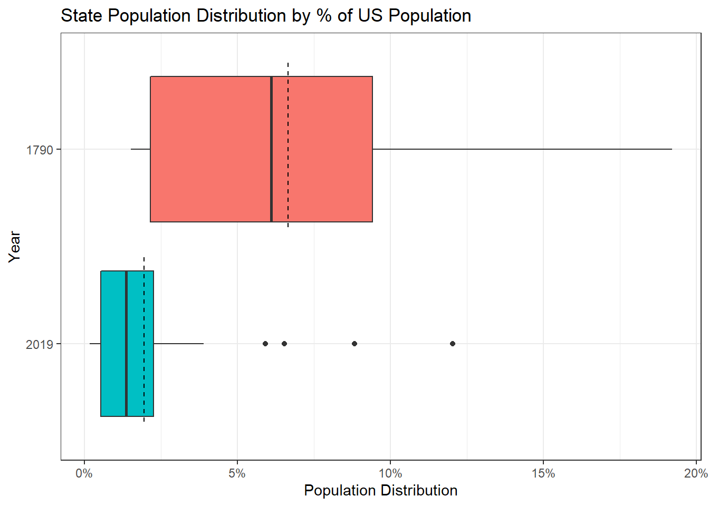
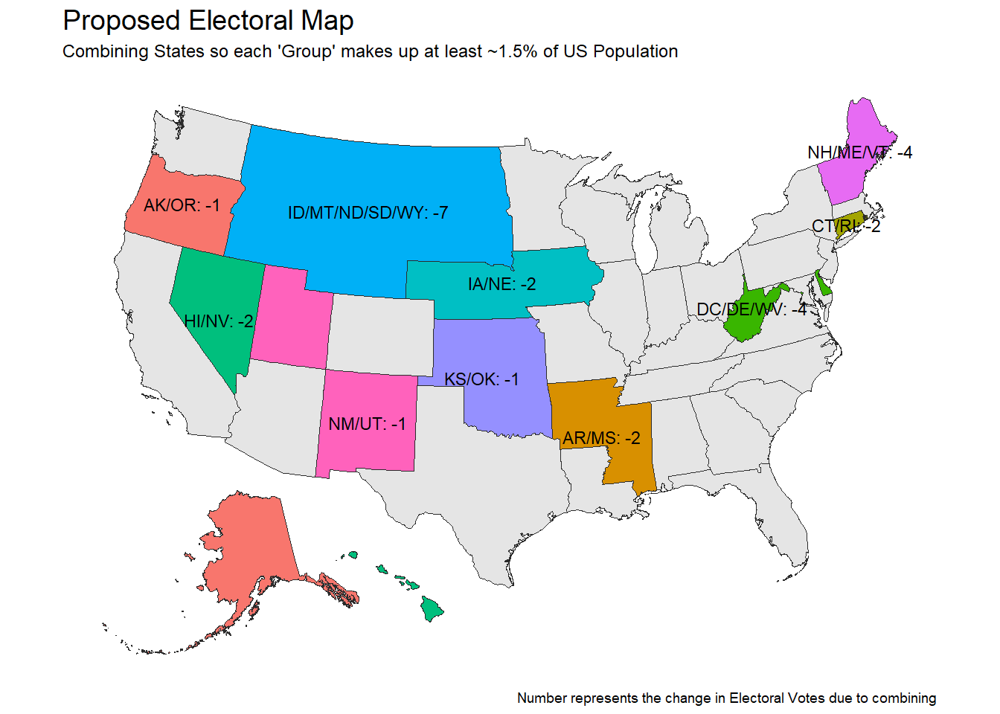

Gathering Data
Throughout this post, a number of difference libraries will be used as outputs will include plots, maps, and tables:
Loading Libraries
library(rvest) #Web-Scraping
library(tidyverse) #Data Cleaning and Plotting
library(janitor) #Data Cleaning
library(sf) #Manipulate Geographic Objects
library(httr) #Used to Download Excel File from Web
library(readxl) #Read in Excel Files
library(kableExtra) #Create HTML TablesGetting the US Population by State in 1790
Data from the 1790 US Census will be gathered from Wikipedia and scraped using the rvest package. In the following code block, all table tags will be extracted from the webpage and then I guessed and checked until I found the table I was looking for (in this case what I wanted was the 3rd table). The html_table() function converts the HTML table into a data frame and clean_names() from the janitor package will change the column headers into an R friendly format.
Finally, stringr::str_remove_all() will use regular expressions to remove the footnote notation “[X]” from the totals and readr::parse_number() will convert the character variable with commas into a numeric.
us_pop_1790 <- read_html('https://en.wikipedia.org/wiki/1790_United_States_Census') %>%
html_nodes("table") %>%
.[[3]] %>%
html_table() %>%
clean_names() %>%
filter(state_or_territory != 'Total') %>%
transmute(
state = state_or_territory,
population_1790 = str_remove_all(total, '\\[.+\\]') %>%
parse_number(),
population_percent_1790 = population_1790/sum(population_1790)
)Getting US Population by State in 2019
A similar process will be used to get the population estimates for 2019 from Wikipedia. In this case there is only 1 table on the page so html_node('table') can be used rather than html_nodes('table') like in the above code block for 1790.
us_pop_2019 <- read_html('https://simple.wikipedia.org/wiki/List_of_U.S._states_by_population') %>%
html_node('table') %>%
html_table() %>%
clean_names() %>%
filter(!is.na(estimated_population_per_electoral_vote_2019_note_2),
!estimated_population_per_electoral_vote_2019_note_2 %in% c('', '—'),
rank_in_states_territories_2010 != '—') %>%
transmute(
state,
population_2019 = parse_number(population_estimate_july_1_2019_2),
population_percent_2019 = population_2019 / sum(population_2019)
)Getting # of Electoral Votes for Each State by Year
Finally, the table containing number of electoral votes by state by year will be extracted from Wikipedia. New code pieces for this code block are the use of selecting columns by number in the dplyr::select() and dplyr::rename() calls. Also, the use of dplyr::across() which in this context is a replacement for mutate_if, mutate_at, and mutate_all. Here I tell the mutate() to take all variables that start with “electoral votes” and apply the readr::parse_number() function to them keeping the names the same. We’ll use this data set later on.
electoral_votes <- read_html('https://en.wikipedia.org/wiki/United_States_Electoral_College') %>%
html_nodes("table") %>%
.[[5]] %>%
html_table(fill = T) %>%
select(2, 4, 36) %>%
filter(!Electionyear %in% c('Total', 'Electionyear', "State")) %>%
rename(state = 1, electoral_votes_1792 = 2, electoral_votes_2020 = 3) %>%
mutate(across(starts_with('electoral_votes'), parse_number))Q1: Do states today represent smaller proportions of the population than they did when the Electoral College was formed?
My hypothesis is that the electoral college has become less effective because we’ve added too many small states that reflect minor amounts of the US population and that when the Electoral College was established the population distributions of states were more similar.
To check this I’ll be comparing the distributions of State populations as a % of the Total US Population for 1790 and 2019. One note before getting into the code is that in the article for the 1790 state population, Maine is given its own row. However, Maine was a part of Massachusetts until 1820, so since we’re more focused on “electing blocks” rather than states I will merge Maine into Massachusetts.
For this next code block, I join the two population data sets together and then all numeric variables summarized. Then, I melt the population percentages by year into a long-form data frame. Finally, I extract the numeric year from the variable names and compare the box plots of the % of Total Population for each State from 1790 and 2019.
us_pop_2019 %>%
left_join(
us_pop_1790 %>%
mutate(state = if_else(state == 'Maine', 'Massachusetts', state)) %>%
group_by(state) %>%
summarize(across(where(is.numeric), sum)),
by = "state"
) %>%
pivot_longer(
cols = c(contains("percent")),
names_to = "year",
values_to = "population_dist"
) %>%
mutate(year = str_extract(year, '\\d+') %>% as.integer) %>%
ggplot(aes(x = fct_rev(factor(year)), y = population_dist,
fill = factor(year))) +
geom_boxplot() +
labs(x = "Year", y = "Population Distribution",
title = "State Population Distribution by % of US Population") +
annotate('linerange', y = 1/nrow(us_pop_2019),
xmin = .6, xmax = 1.45, lty = 2) +
annotate('linerange', y = 1/(nrow(us_pop_1790)-1),
xmin = 1.6, xmax = 2.45, lty = 2) +
scale_y_continuous(label = scales::percent_format(accuracy = 1)) +
scale_fill_discrete(guide = F) +
coord_flip() +
theme_bw()
In the chart above we’re looking at the distribution of states by the % of the total US population they make up. The dashed lines represent the expected values if all states had the same amount. For example, there are 51 “voting bodies” that make up 100% of the US population, so the “expected” amount would be 1/51 or 2.0%. In 1790, the largest state made up 19.2% and the smallest state made up 1.5% of the total population. In 2019, the largest state makes up 12% of the total population and the smallest makes up 0.2% of the total population.
While some of this is due to having more states which means the same 100% is being cut into more pieces. Another way to see whether states are making up smaller pieces of the population today than back is to compare the data to those expected values from before. In the case of 1790, there are 15 voting bodies so on average we’d expected each state to make up 6.7%. And when looking the distribution of the states in 1790, 60% are below the expected amount of 6.7%. This is compared to the distribution in 2019 where 67% are below the expected amount of 2.0%.
When asking whether or not there are more small states in 2019 vs. 1790, I find that 28 of the 51 states (with DC) [55%] have a % of the US Population smaller than the minimum state from 1790 [1.5%]. These 28 states make up 141 or 26% of the 538 electoral votes.
So while there’s not a large difference between actual and expected it does seem that we have a greater concentration of smaller population states now than when the electoral college was first established based on the concentration that make up less than 1.5% of the US population.
Q2. How could states be combined to ensure each “voting group” meets a minimum population threshold?
The fact that 55% of states have a % of 2019 US Population smaller than the smallest percentage in 1790 gives promise to the idea that combining states could be feasible. So for this exercise, I’ll combine states together in order to ensure that each group has at least a minimum of 1.5% of the US Population.
Originally I had wanted to come up with a cool algorithm to find the optimal solution to ensure that each state group hit the 1.5% while taking into account the location of the states being combined and the political culture of the states… but alas I couldn’t figure out how to do it. So I combined the states manually taking into account geography but completely ignoring how states usually vote. In my new construction the following states get combined:
- Alaska & Oregon
- Arkansas & Mississippi
- Connecticut & Rhode Island
- Washington DC, Delaware, and West Virginia
- Hawaii & Nevada
- Iowa & Nebraska
- Idaho, Montana, North Dakota, South Dakota, and Wyoming
- Kansas & Oklahoma
- New Hampshire, Maine, and Vermont
- New Mexico & Utah
new_groupings <- us_pop_2019 %>%
mutate(
state = if_else(state == 'D.C.', 'District of Columbia', state),
new_grouping = case_when(
state %in% c('New Hampshire', 'Maine', 'Vermont') ~ 'NH/ME/VT',
state %in% c('Rhode Island', 'Connecticut') ~ 'CT/RI',
state %in% c('West Virginia', 'Delaware', 'District of Columbia') ~
'DC/DE/WV',
state %in% c('Alaska', 'Oregon') ~ 'AK/OR',
state %in% c('Utah', 'New Mexico') ~ 'NM/UT',
state %in% c('Hawaii', 'Nevada') ~ 'HI/NV',
state %in% c('Idaho', 'Montana', 'North Dakota',
'South Dakota', 'Wyoming') ~ 'ID/MT/ND/SD/WY',
state %in% c('Iowa', 'Nebraska') ~ 'IA/NE',
state %in% c('Arkansas', 'Mississippi') ~ 'AR/MS',
state %in% c('Oklahoma', 'Kansas') ~ 'KS/OK',
TRUE ~ state
)
)To display this brave new world, I will construct a map that shows my new compressed electoral map and the resulting changes in the number of electoral votes. The first step is adding the electoral votes into the data frame constructed in the last code block:
new_groupings <- new_groupings %>%
left_join(
electoral_votes %>%
transmute(state = if_else(state == 'D.C.', 'District of Columbia', state),
electoral_votes_2020),
by = "state"
) Next, I need a mechanism to assign a number of electoral votes to my compressed map. Normally, there are 538 electoral votes representing the 435 voting members of Congress, the 100 Senators, and 3 additional electoral votes for Washington DC. Since I’m not trying to rock the boat too much. My new system will maintain the 2 votes per group represented by the Senate allocation and the population allocation from the Congressional side. In order to understand and apply this relationship I’m building a quick and dirty linear regression model to predict the population component for the new of electoral votes
electorial_vote_model <- lm(electoral_votes_2020-2 ~ population_2019,
data = new_groupings)
electorial_vote_model##
## Call:
## lm(formula = electoral_votes_2020 - 2 ~ population_2019, data = new_groupings)
##
## Coefficients:
## (Intercept) population_2019
## 0.094428506 0.000001313This model shows that there is 1.313 electoral votes per 1 million people.
To visualize what this new electoral map will look map, I will use the sf package. While I’m not very familiar with this package (maybe a subject of a future post), I’ve tinkered around with the format before and have found it very compatible with tidy principles.
The first step is getting a shape file. For the United States, I will leverage the usa_sf function from the albersusa package which will return a map as a simple feature. The “laea” represents the projection.
usa <- albersusa::usa_sf("laea") %>% select(name, geometry)
knitr::kable(head(usa))| name | geometry |
|---|---|
| Arizona | MULTIPOLYGON (((-1111066 -8… |
| Arkansas | MULTIPOLYGON (((557903.1 -1… |
| California | MULTIPOLYGON (((-1853480 -9… |
| Colorado | MULTIPOLYGON (((-613452.9 -… |
| Connecticut | MULTIPOLYGON (((2226838 519… |
| District of Columbia | MULTIPOLYGON (((1960720 -41… |
What makes the magic of the sf class is that the shape information is contained in the geometry column, but everything else can be operated on like a normal data frame. So for the next step, I’ll join the “state groupings” information to this shape file data using the “name” column from the shape data and the state column from the groupings data.
Next, I summarize the data to “combined state groupings” level where I get the sums of the population and the number of original electoral votes. The two unique parts of this summarize statement are:
st_unionwhich will combine geographic areas from the shape file into new shapes. If you wanted to combine the groups but maintain all original boundaries thenst_combinewould be used instead.- Creating a better label for the combined state names by using
pastein the summarize with thecollapseoption which concatenates the states in the aggregation.
- The final mutate step uses the
predictfunction to apply the regression model to compute the new electoral vote values for the combined states. Any state that wasn’t combined retained its original number of votes.
Afterwards, the new data set looks like:
new_usa <- usa %>%
left_join(new_groupings %>%
transmute(state,
new_grouping,
population_2019,
electoral_votes_2020
),
by = c("name" = "state")
) %>%
group_by(new_grouping) %>%
summarize(
geom = st_union(geometry),
population_2019 = sum(population_2019),
electoral_votes = sum(electoral_votes_2020),
states = paste(name, collapse = '/')
) %>%
mutate(
new_ev = if_else(
states == new_grouping,
electoral_votes,
ceiling(predict(electorial_vote_model, newdata = .) + 2)
),
lbl = if_else(new_grouping == states, NA_character_,
paste0(new_grouping, ": ", new_ev - electoral_votes)))
knitr::kable(head(new_usa))| new_grouping | geom | population_2019 | electoral_votes | states | new_ev | lbl |
|---|---|---|---|---|---|---|
| AK/OR | MULTIPOLYGON (((-1899337 -2… | 4949282 | 10 | Oregon/Alaska | 9 | AK/OR: -1 |
| Alabama | MULTIPOLYGON (((1145349 -15… | 4903185 | 9 | Alabama | 9 | NA |
| AR/MS | MULTIPOLYGON (((1052956 -15… | 5993974 | 12 | Arkansas/Mississippi | 10 | AR/MS: -2 |
| Arizona | MULTIPOLYGON (((-1111066 -8… | 7278717 | 11 | Arizona | 11 | NA |
| California | MULTIPOLYGON (((-1853480 -9… | 39512223 | 55 | California | 55 | NA |
| Colorado | MULTIPOLYGON (((-613452.9 -… | 5758736 | 9 | Colorado | 9 | NA |
Now we’re ready to plot the map. Plotting sf geometries work within the ggplot paradigm where geom_sf will draw the geometries and geom_sf_text will handle the overlays for the given groups. coord_sf changes the coordinate system of the plot. And everything else should be familiar from vanilla ggplot.
new_usa %>%
ggplot() +
geom_sf(color = "#2b2b2b", size=0.125, aes(fill = lbl)) +
geom_sf_text(aes(label = lbl), check_overlap = T, size = 3) +
coord_sf(crs = st_crs("+proj=laea +lat_0=45 +lon_0=-100 +x_0=0 +y_0=0 +a=6370997 +b=6370997 +units=m +no_defs"), datum = NA) +
scale_fill_discrete(guide = F, na.value = "grey90") +
labs(title = "Proposed Electoral Map",
subtitle = "Combining States so each 'Group' makes up at least ~1.5% of US Population",
caption = "Number represents the change in Electoral Votes due to combining") +
ggthemes::theme_map() +
theme(
plot.title = element_text(size = 14)
)
The states in gray remained unchanged and the filled in states represent our new groupings. The states that directly border each other have been combined into an “electoral grouping” with a newly assigned number of electoral votes. Since the electoral vote model was based on population, the change in the number of electoral votes comes primarily from the loss of the two senate votes for each combined state.
For example, NH/ME/VT originally would have had 11 electoral votes and under the new system will have 7 for a net change of -4 due to the loss of two combined states 2 senate votes.
Under the normal electoral college there were 538 votes and under this new system that number is reduced to 512.
Now that we have our new electoral college, would it have made a difference in 2016?
Q3: Would this new system have impacted the results of the 2016 election?
The 2016 election results between Donald Trump and Hillary Clinton is provided in great detail from the Federal Election Commission. Surprisingly, it was difficult to find the number of votes by state in an easily consumable way where I wouldn’t have to recode all the state names. So the FEC data will have to do even if its took some complicated data manipulation.
Since the FEC data comes from an Excel file, I first need to download the file from the FEC website. I’ll use the GET function from httr to download the Excel file to a temporary file and then will use read_excel from readxl to read in the file.
Before data manipulation, but after filtering to just Trump and Clinton, the data looks like.
GET("https://www.fec.gov/documents/1890/federalelections2016.xlsx",
write_disk(tf <- tempfile(fileext = ".xlsx")))results2016 <- read_excel(tf, sheet = '2016 Pres General Results') %>%
clean_names() %>%
filter(last_name %in% c('Trump', 'Clinton')) %>%
select(state, state_abbreviation, last_name, general_results)
knitr::kable(head(results2016, 5))| state | state_abbreviation | last_name | general_results |
|---|---|---|---|
| Alabama | AL | Trump | 1318255 |
| Alabama | AL | Clinton | 729547 |
| Alaska | AK | Trump | 163387 |
| Alaska | AK | Clinton | 116454 |
| Arizona | AZ | Trump | 1252401 |
There was a small data quirk with New York state where because the same candidate can appear on multiple party lines a single candidate appears in multiple rows (Clinton appears 4 times and Trump 3). Therefore a first group-by is done to make the data 2 rows per state. Then the data is cast to a wider format, the electoral votes are added back and allocated to the winning candidate (technically this is wrong since Nebraska and Maine do not use all-or-nothing allocations, but its close enough for this exercise).
Then the data is aggregated to the new electoral groupings from the prior section and our “new” electoral votes are allocated in an all or nothing fashion to the candidate.
results2016 <- results2016 %>%
group_by(state, state_abbreviation, last_name) %>%
summarize(general_results = sum(general_results, na.rm = T),
.groups = 'drop') %>%
pivot_wider(
names_from = "last_name",
values_from = "general_results"
) %>%
left_join(
new_groupings %>%
select(state, new_grouping, electoral_votes_2020, population_2019),
by = "state"
) %>%
mutate(trump_ev = (Trump > Clinton)*electoral_votes_2020,
clinton_ev = (Clinton > Trump)*electoral_votes_2020
) %>%
group_by(new_grouping) %>%
summarize(across(where(is.numeric), sum, na.rm = T),
states = paste(state, collapse = '/')) %>%
mutate(new_ev = if_else(
states == new_grouping,
electoral_votes_2020,
ceiling(predict(electorial_vote_model, newdata = .) + 2)
)) %>%
mutate(
new_trump_ev = if_else(Trump > Clinton, new_ev, 0),
new_clinton_ev = if_else(Trump < Clinton, new_ev, 0)
)
knitr::kable(head(results2016, 5))| new_grouping | Clinton | Trump | electoral_votes_2020 | population_2019 | trump_ev | clinton_ev | states | new_ev | new_trump_ev | new_clinton_ev |
|---|---|---|---|---|---|---|---|---|---|---|
| AK/OR | 1118560 | 945790 | 10 | 4949282 | 3 | 7 | Alaska/Oregon | 9 | 0 | 9 |
| Alabama | 729547 | 1318255 | 9 | 4903185 | 9 | 0 | Alabama | 9 | 9 | 0 |
| AR/MS | 865625 | 1385586 | 12 | 5993974 | 12 | 0 | Arkansas/Mississippi | 10 | 10 | 0 |
| Arizona | 1161167 | 1252401 | 11 | 7278717 | 11 | 0 | Arizona | 11 | 11 | 0 |
| California | 8753792 | 4483814 | 55 | 39512223 | 0 | 55 | California | 55 | 0 | 55 |
Finally to visualize the difference in electoral votes between the actual 2016 results and our new 2016 results, the prior data set will be summarized and reshaped to get the data back into a tidy format with the proper labeling. The plot is a simple stacked barplot.
results2016 %>%
summarize(across(contains(c("trump_ev", "clinton_ev")), sum)) %>%
pivot_longer(cols = everything(),
names_to = 'variable',
values_to = 'electoral_votes') %>%
group_by(str_detect(variable, 'new')) %>%
mutate(
percents = electoral_votes/sum(electoral_votes),
old_v_new = if_else(str_detect(variable, 'new'), 'New EC', 'Original EC'),
candidate = case_when(
str_detect(variable, 'trump') ~ "trump",
str_detect(variable, 'clinton') ~ 'clinton',
TRUE ~ 'total'
),
lbl = paste0(electoral_votes,
'\n(',
scales::percent(percents, accuracy = .1) ,')')
) %>%
ggplot(aes(y = old_v_new, x = percents, fill = candidate)) +
geom_col(width = .5) +
geom_text(aes(label = lbl), position = position_stack(vjust = .5)) +
geom_vline(xintercept = .5, lty = 2) +
scale_x_continuous(label = scales::percent, expand = c(0,0)) +
scale_fill_manual(values = c('clinton' = 'blue', 'trump' = 'red')) +
guides(fill = guide_legend(reverse = T)) +
labs(x = "% of Electoral Vote",
y = "",
title = "Comparing 2016 Election Results in the Original vs. New System",
fill = "") +
cowplot::theme_cowplot() +
theme(
plot.title.position = 'plot',
axis.line = element_blank(),
axis.ticks.x = element_blank(),
axis.text.x = element_blank()
)
With the new electoral grouping system the net change in percentage of electoral votes was only 0.3%, so the overall result wouldn’t have changed.
What Actually Changed in the New System?
The final question would be how did the electoral votes change between the old system and the new system. The tbl_dl data frame is restructuring the data into the table format which will only have rows for groupings where the number of electoral votes is different and I’m creating labels to include the “+” and “-” symbols.
tbl_dt <- results2016 %>%
filter(trump_ev != new_trump_ev | clinton_ev != new_clinton_ev) %>%
transmute(
new_grouping,
clinton_delta = (new_clinton_ev - clinton_ev),
trump_delta = (new_trump_ev - trump_ev),
clinton_lbl = paste0(
if_else(clinton_delta > 0, "+", ""),
clinton_delta
),
trump_lbl = paste0(
if_else(trump_delta > 0, "+", ""),
trump_delta
)
) %>%
select(new_grouping, clinton_lbl, trump_lbl)To complete the table visualization I’m using the kableExtra package. The kable_paper argument is a style setting and the two uses of column_spec sets the cell background to either red or green if the label constructed above is non-zero and white otherwise (which will appear blank). This was my first experience with kableExtra and while I’m happy that I was able to get this to be how I wanted, I found certain parts of the syntax a little frustrating.
tbl_dt %>%
kbl(align = c('l', 'c', 'c'),
col.names = c('', 'Clinton', 'Trump'),
caption = "Election 2016: Candidate's Change in Electoral Votes") %>%
kable_paper(full_width = F) %>%
column_spec(2, color = 'white', background = case_when(
str_detect(tbl_dt$clinton_lbl, "\\+") ~ 'green',
str_detect(tbl_dt$clinton_lbl, "\\-") ~ 'red',
TRUE ~ 'white'
)
) %>%
column_spec(3, color = 'white', background = case_when(
str_detect(tbl_dt$trump_lbl, "\\+") ~ 'green',
str_detect(tbl_dt$trump_lbl, "\\-") ~ 'red',
TRUE ~ 'white'
)
)| Clinton | Trump | |
|---|---|---|
| AK/OR | +2 | -3 |
| AR/MS | 0 | -2 |
| CT/RI | -2 | 0 |
| DC/DE/WV | +1 | -5 |
| HI/NV | -2 | 0 |
| IA/NE | 0 | -2 |
| ID/MT/ND/SD/WY | 0 | -7 |
| KS/OK | 0 | -1 |
| NH/ME/VT | -4 | 0 |
| NM/UT | -5 | +4 |
In most cases, votes were lost due to the combining of smaller states into these groupings but in a few instances the combination of multiple states changed who won the popular vote. For example, in the Alaska/Oregon there were originally 10 electoral votes (3 from Alaska which went to Trump, 7 from Oregon that went to Clinton). The grouping lost vote in the combining and then the combined Oregon/Alaska went to Clinton overall. Therefore, Clinton gets all 9 new electoral votes (+2 from the initial 7) and Trump loses the 3 he had from Alaska.
Wrapping Up
Back at the beginning of this analysis I hypothesized that the Electoral College had become more over-weighted towards smaller states than back in the 1790s during the early days of the electoral college. Based on comparing the % of the US Population of states from 1790 vs. 2019 I showed that this was true although not massively.
I proposed an idea to revise the Electoral College by combining states to ensure that each grouping makes up at a minimum 1.5% of the US Population, which was the smallest share of population from 1790. This reduced the overall number of electoral votes due to the reduction of the automatic 2 votes per state for the combined states.
Finally, I applied my new Electoral College to the 2016 election… it made almost no difference.
So overall, this thought exercise was fun to work through but it winds up being an incredibly small change to the results from the current system.